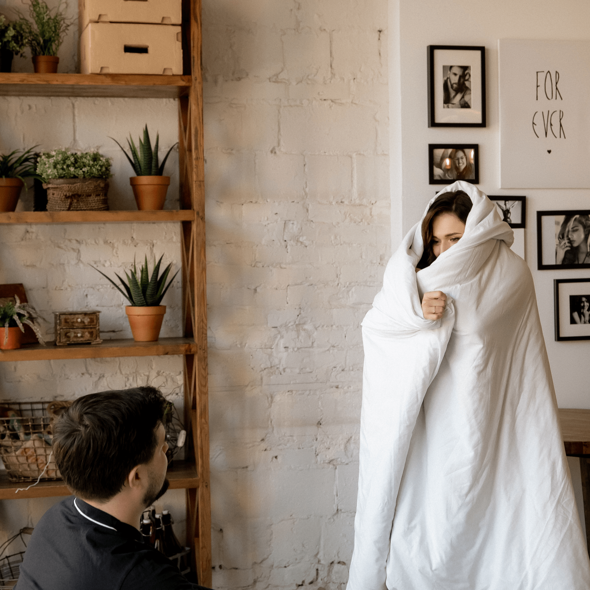
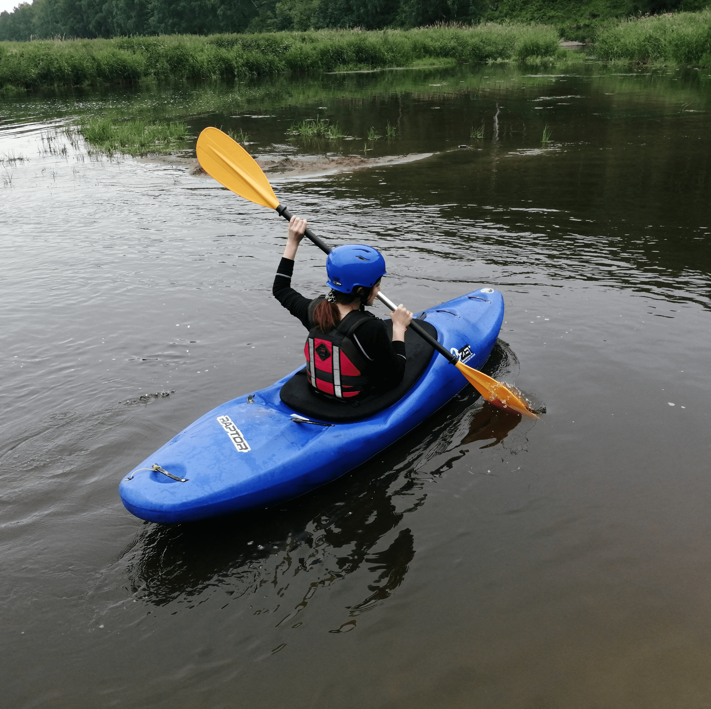
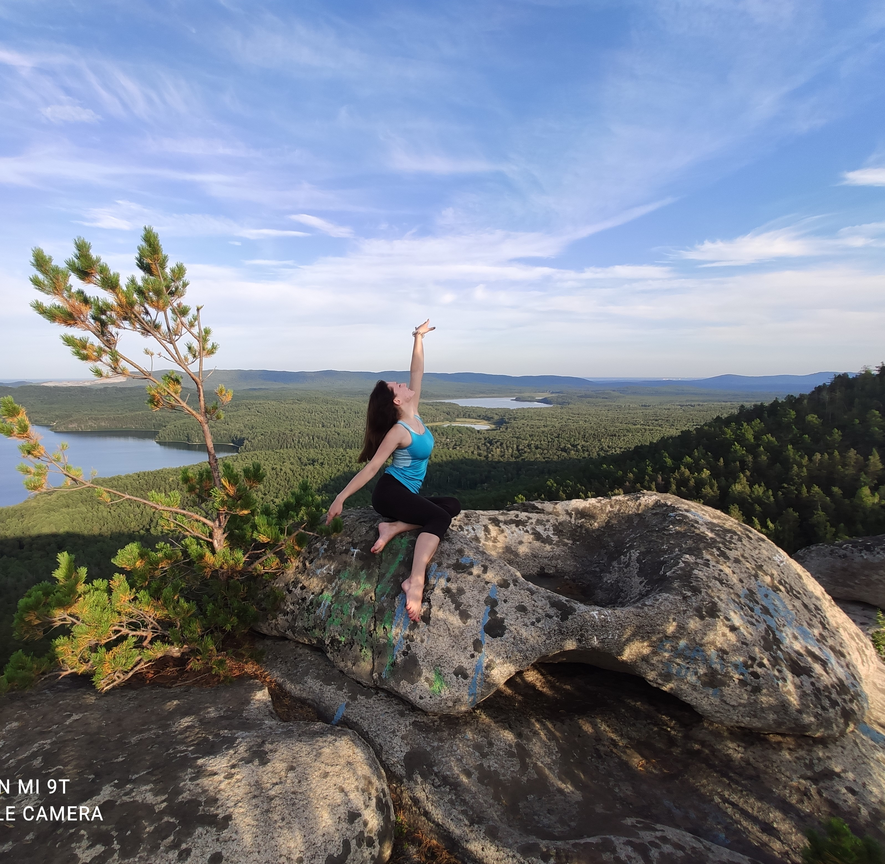
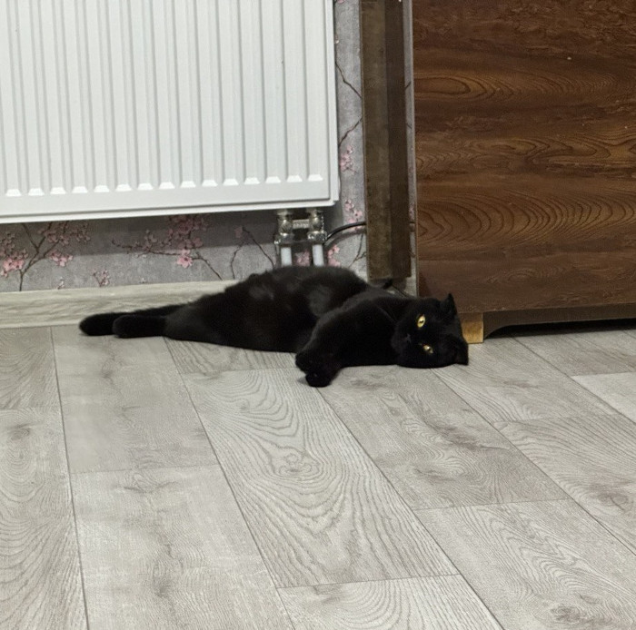

-
Фритрек и нулевой спринт: Подготовка к работе
 </FLY>
</FLY>
Это было самое начало пути. На этом этапе важно было проникнуться основами и настроиться на учёбу. И, возможно, подумать, как новые знания могут повлиять на ваше будущее.
Начало обучения. Ожидание полёта - лечу на встречу новым интересным знаниям, новым знакомым, новому опыту. Настрой боевой, чувство, что со всем справлюсь. Понимаю, что это будет не лёгкий путь, но у меня получится 💪
-
1 спринт: Я — чистый лист
 </FEAR>На первых этапах мы работали со страхами и сомнениями, которые часто испытывают новички. Один из них — страх перед чистым листом. Это, конечно же, намного сложнее, чем боязнь куска бумаги. Часто за этим ощущением скрываются более глубокие вопросы: с чего начать? а вдруг будет слишком сложно? что, если я не справлюсь?
Я в домике! Как много студентов в когорте😱. Наверное, у них много опыта, они задают много вопросов и отвечают на впоросы других студентов, а мне ничего не приходит в голову...Правильное ли я приняла решение пойти учиться? Получится ли у меня вырасти в крутого специалиста?🤨
-
1 спринт: А если не получится?
 </NEXT>
</NEXT>
Первый проект — позади! Но это всё ещё самое начало пути. Радость могла быстро померкнуть и смениться ожиданием провала. Или вы, наоборот, могли вдохновиться успехами и поверить в себя.
Ура! 🥳 Первый проект позади. Сдала воремя, с третьего раза, получила важные советы от ревьювера. Чувствую уверенность с своих силах. Давайте следующий 😎
-
2 спринт: Погоня за идеалом
 </NOT IDEAL>
</NOT IDEAL>
На этом этапе вы уже достаточно разбирались в основах вёрстки, чтобы понять, как много ещё впереди. Вы могли попытаться погнаться за идеалом и понять, что он недостижим. А, может, вы вовсе и не подвержены перфекционизму и вместо того, чтобы сделать идеально, старались просто сделать.
Друг, мне этот мир абсолютно понятен 😎 Шучу. Мир мне понятен не совсем, а вот в том, что идел не достижим я уверена точно. Ночами пыталась сделать идеально,а на проверках оказывается, что идеал где-то там - далеко 🙄. Ещё я поняла, что нужно уметь балансировать между обучением и отдыхом. От усердной работы до перегорания один шаг 😬
-
2 спринт: О тех, кто рядом
</MY LOVE>Всё это время вы были не одиноки (хотя, возможно, иногда и чувствовали, что одни против целого мира). Вас окружали одногруппники, команда сопровождения и просто близкие люди, которым можно пожаловаться, если очередной макет просто так не поддавался. Осваивать что-то новое легче, когда рядом есть единомышленники, не правда ли?
Мой муж 💖. Именно он поддержал меня в решении сменить профессию, заняться тем, что действительно нравится. Мне не хватит никаких слов, чтобы сказать о том, на сколько я ему благодарна 🥰. Я всегда знаю, что могу на него положиться, что он всегда меня поймёт. Ой, забыла сказать, что он ещё и крутой фронтенд-разработчик 💪.
-
3 спринт: Обходные стратегии
 </MOVE ON>На этом курсе вы постоянно решали разные задачи. В какой-то момент вам могло показаться, что решения просто иссякли. Значит, пришло время посмотреть на задачу под другим углом.
Чтобы посмотреть на задачу под другим углом 🤸, нужна смена деятельности. Будь это обычный спорт или экстремальный вид спорта, а может даже просто прогулка в лесу🚶. Главное, не зацикливаться на чём-то одном и время от времени переключать своё внимание. Что касается меня,то чтобы отвлечься от сложной задачи, мне помогает вождение машины или просмотр сериальчиков 🎬.
-
3 спринт: Когда опускаются руки
 </RELAX>Во время учёбы часто возникает чувство, когда не знаешь, за что хвататься. Вроде и проектную пора сдавать, и задачи хочется порешать, и в теории получше разобраться, и жизнь не забыть пожить. В такие моменты очень нужна концентрация. Вспомните, откуда вы её черпали.
Медитация 🧘 Никогда не думала, что мне помогут сконцентрироваться медитации. В интернете есть куча разных каналов с медитациями и афирмациями. Если ты запутался в том, что тебе на данный момент нужно, отдохни, выпей чаю, помедитируй 😌 Релакс - наше всё 💆
-
«Сейчас я здесь»
 </ZZZ...>Сейчас вы уже очень много знаете о вёрстке. Но это только начало. Во-первых, впереди ещё много материала про «красотищу». Во-вторых, с окончанием курса учёба не заканчивается. Вёрстка — это целый мир. И этот мир постоянно меняется. Познать его полностью не получится, но это тот случай, когда важен сам процесс познания. Ведь часто путь — и есть результат.
Устала 😩. Честно говоря, чаще я стараюсь мыслить позитивно, но на данный момент чувствую, что устала. Эмоциональные качели, отсутствие режима выматывает в какой-то степени. Хочется на море, к белому песку 🏄 Ну, ничего. Уже не мало пройдено, я заканчиваю очередной проект, одназначно положительных моментов много. Врываемся в весну немного уставшими, но с хорошим настроением 🤟